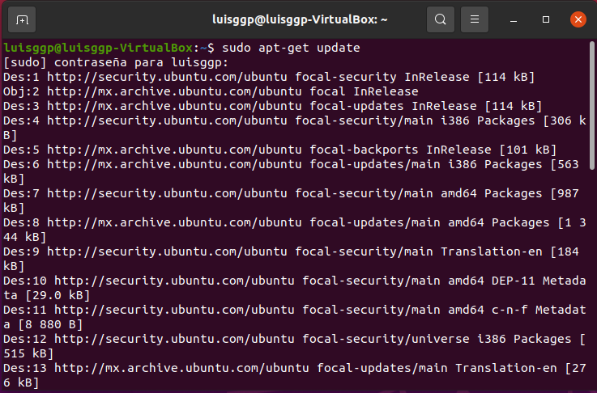
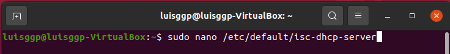

DHCP (Dynamic Host Configuration Protocol) es un conjunto de reglas para dar direcciones IP y opciones de configuración a ordenadores y estaciones de trabajo en una red. Una dirección IP es un número que identifica de forma única a un ordenador en la red, ya sea en una red corporativa o en Internet. Una dirección IP es análoga a un número de teléfono. La dirección IP puede ser asignada estáticamente (manualmente) por el administrador o asignada dinámicamente por un servidor central.
DHCP funciona sobre un servidor central (servidor, estación de trabajo o incluso un PC), el cual asigna direcciones IP en una LAN o entre varias VLAN. Esta tecnología reduce el trabajo de un administrador, que de otra manera tendría que visitar todos los ordenadores o estaciones de trabajo uno por uno para introducir la configuración consistente en IP, máscara, gateway, DNS, etc.
Un servidor DHSC (DHCP Server) es un equipo en una red que está corriendo un servicio DHCP. Dicho servicio se mantiene a la escucha de peticiones broadcast DHCP. Cuando una de estas peticiones es oída, el servidor responde con una dirección IP y opcionalmente con información adicional.
Existen 3 modos en DHCP para asignar direcciones IP a otros equipos:
Asignación manual: el administrador configura manualmente las direcciones IP del cliente en el servidor DHCP. Cuando la estación de trabajo del cliente pide una dirección IP, el servidor mira la dirección MAC y procede a asignar la que configuró el administrador.
Asignación automática: al cliente DHCP (ordenador, impresora, etc.) se le asigna una dirección IP cuando contacta por primera vez con el DHCP Server. En este método la IP es asignada de forma aleatoria y no es configurada de antemano.
Asignación dinámica: el servidor DHCP asigna una dirección IP a un cliente de forma temporal. Digamos que es entregada al cliente Server que hace la petición por un espacio de tiempo. Cuando este tiempo acaba, la IP es revocada y la estación de trabajo ya no puede funcionar en la red hasta que pida otra.
Instalación y configuración de un servidor ISC DHCP
El servidor DHCP de ISC (dhcpd) implementa el protocolo de configuración dinámica de host (DHCP) y el protocolo de arranque de Internet (BOOTP). El DHCP permite que los hosts de una red TCP/IP soliciten y sean asignados direcciones IP, y, además, que detecten información sobre la red a la cual están conectados. BOOTP proporciona una funcionalidad similar.
A continuación te explico el procedimiento para realizar la instalación de tu propio servidor ISC DHCP con el sistema operativo Ubuntu 20.04 en VirtualBox. En este caso nuestro SO anfitrión es Windows 10 que será el cliente para ésta práctica.
Inicialmente desde la terminal de Ubuntu 20.04 actualizamos la lista de paquetes de los repositorios y así obtener información sobre las versiones más recientes de paquetes y sus dependencias del repositorio de Linux con:
sudo apt-get update

Figura 1. Actualizando la lista de paquetes antes de la instalación.
Instalamos el paquete de nuestro servidor ISC DHCP y respondemos con 'S' al cuestionamiento sobre el tamaño de descarga, ejecutando el siguiente comando:
sudo apt-get install isc-dhcp-server
Figura 2. Instalando el servidor ISC DHCP Server en Ubuntu 20.04.
Una vez que ha finalizado la instalación, editaremos el archivo de isc-dhcp-server que se encuentra en el directorio "/etc/default/" utilizando el editor "nano" y modificaremos el valor de la interfaz de red que trabajará con el servidor ISC DHCP, para esta práctica es la interfaz enp0s3:
sudo nano /etc/default/isc-dhcp-server

Figura 3. Instalando el servidor ISC DHCP Server en Ubuntu 20.04.Figura 4. Archivo isc-dhcp-server
Ahora configuramos los parámetros de nuestro servidor contenidos en el archivo dhcpd.conf que se encuentra en el directorio "/etc/dhcp/" con el editor "nano". Sin modificar los valores por defecto de este archivo, agregaremos lo siguiente:
La red que utilizaremos es la que tengamos asignada en nuestra máquina virtual Ubuntu (en mi caso es la red 192.168.1.0 con una máscara de 255.255.255.0). Si desconoces el valor de estos parámetros, puedes ejecutar el comando "ifconfig" antes de editar este archivo. Asignamos estos valores a "subnet" y "netmask"
El rango de direcciones IP que podrá asignar nuestro servidor ISC DHCP será un máximo de 100. Para mi red lo defino como "range 192.168.1.1 192.168.1.100".
En "option domain-name-servers" utilizo los de Google por defecto que son el 8.8.8.8 como primario y el 4.4.4.4 como secundario.
En "option domain-name" colocaré el nombre "MiServerISC-DHCP-LuisG".
La máscara de mi red la asigno nuevamente en "option subnet-mask 255.255.255.0".
En "option routers" coloco la dirección 192.168.1.254 que es la IP estática.
La dirección broadcast de mi red es 192.168.1.254 y la asignamos en el parámetro "option broadcast-address".
Finalmente establecemos los dos últimos parámetros: "default-lease-time 600" y "max-lease-time 7200".
***NO OLVIDES QUE AL FINAL DE CADA ARGUMENTO DEBES COLOCAR PUNTO Y COMA (;).
sudo nano /etc/dhcp/dhcpd.conf
Figura 5. Editar el archivo dhcpd.conf con nano.Figura 6. Agregando parámetros funcionales para el servidor ISC DHCP.
Para aplicar las configuraciones realizadas en los archivos de DCHP, pasamos a reiniciar los servicios de DHCP con el comando:
sudo service isc-dhcp-server restart
Figura 7. Reiniciando nuestro servidor ISC DHCP.
En nuestro SO Windows 10 configuramos la red para que deje de tener una IP estática y la obtenga automáticamente en la opción de IPv4 de las Conexiones de red para que espere una respuesta de nuestro servidor ISC DHCP.
Figura 8. Configuraciones de las conexiones de red de Windows.
Desde la terminal CMD de Windows haremos un PING a la dirección 192.168.1.254 para probar la conexión y posteriormente ejecutamos el comando ipconfig para verificar la dirección IP que nos asignó el servidor ISC DHCP instalado en Ubuntu 20.04.